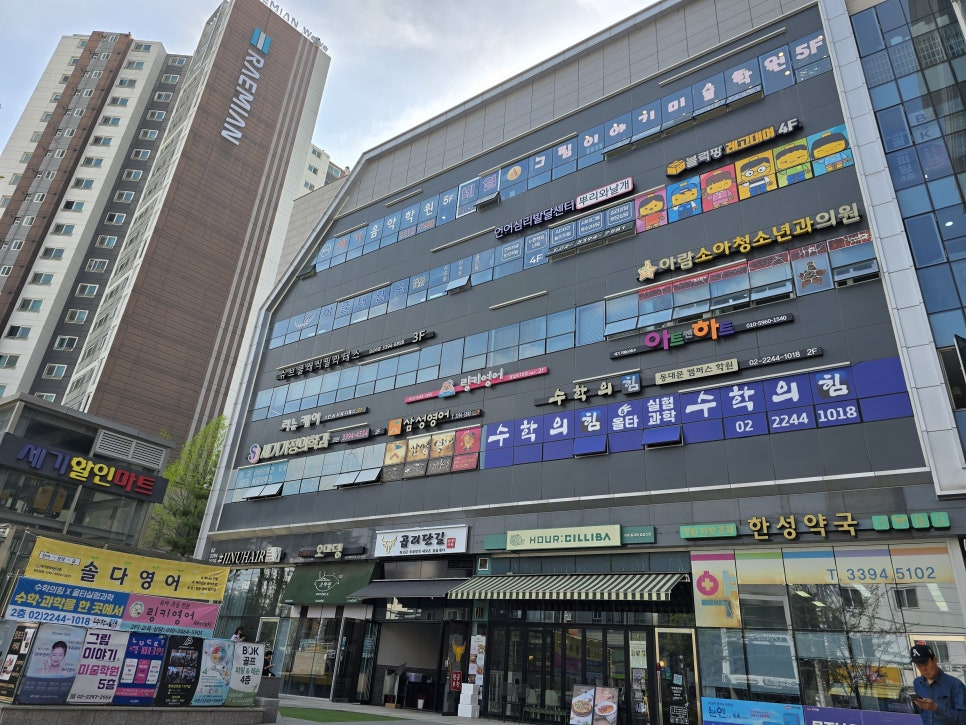

오시는 길

현재 약도 이미지는 준비 중이며, 임시로 센터가 위치한 건물 사진을 안내드립니다. 방문 전 예약 시간을 확인해 주시고, 처음 오시는 경우 건물 4층의 센터 위치를 확인해 주세요.
주소
서울 동대문구 답십리로140
세기프라자 4층
문의
전화: 02-3394-7581
이메일: rnw_center@naver.com

현재 약도 이미지는 준비 중이며, 임시로 센터가 위치한 건물 사진을 안내드립니다. 방문 전 예약 시간을 확인해 주시고, 처음 오시는 경우 건물 4층의 센터 위치를 확인해 주세요.
서울 동대문구 답십리로140
세기프라자 4층
전화: 02-3394-7581
이메일: rnw_center@naver.com